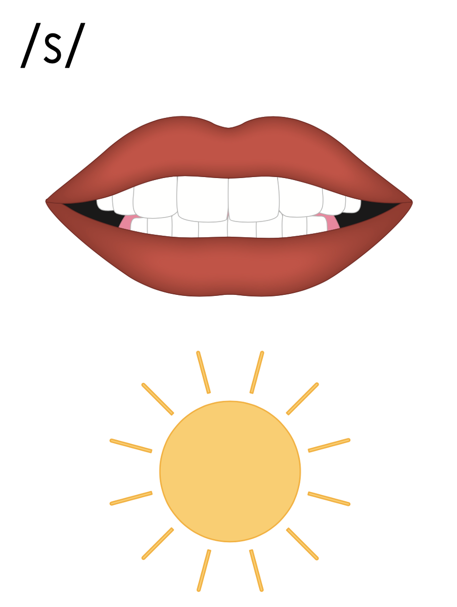
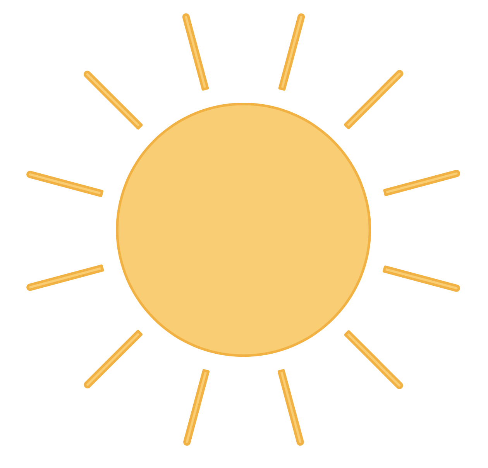

Lesson 60
_ce /s/

ufliteracy.org


Lesson 60
_ce /s/


See UFLI Foundations lesson plan Step 1 for phonemic awareness activity.


See UFLI Foundations lesson plan Step 2 for student phoneme responses.


a
i
o
e
u
nk
ng
wh
ph
ch
th
sh
ck
ff
ll
ss
zz
s


See UFLI Foundations lesson plan Step 3 for auditory drill activity.

No slides needed for auditory drill.


See UFLI Foundations lesson plan Step 4 for blending drill word chain and grid.
Visit ufliteracy.org to access the Blending Board app.


See UFLI Foundations lesson plan Step 5 for recommended teacher language and activities to introduce the new concept.

e
c

c

e
r
i
c

s
ss
_ce

Handwriting paper for letter formation practice. Use as needed.
See UFLI Foundations manual for more information about letter formation.

pace
twice

face
race
place
space
trace
ice
mice
nice
price

See UFLI Foundations lesson plan Step 5 for words to spell.
Handwriting paper to model spelling.

See UFLI Foundations lesson plan Step 5 for words to spell.
Handwriting paper for guided spelling practice.


Insert brief reinforcement activity and/or transition to next part of reading block.

Lesson 60
_ce /s/

New Concept Review

See UFLI Foundations lesson plan Step 5 for recommended teacher language and activities to review the new concept.
e
c
c
e
r
i
c
s
ss
_ce
face
place
nice
twice


See UFLI Foundations lesson plan Step 6 for word work activity.
Visit ufliteracy.org to access the Word Work Mat apps.


See UFLI Foundations lesson plan Step 7 for irregular word activities.
The white rectangle under each word may be used in editing mode. Cover the heart and square icons then reveal them one at a time during instruction.

See UFLI Foundations manual for more information about reviewing irregular words.

who
Lesson 54+
WH represents the /h/ sound.
O represents the /ū/ sound.
The white rectangle under the word may be used in editing mode. Cover the heart and square icons then reveal them one at a time during instruction.
here
Lesson 54+
H represents the /h/ sound.
ERE represents the /ear/ sound.
The white rectangle under the word may be used in editing mode. Cover the heart and square icons then reveal them one at a time during instruction.
by
Lessons 55-72
*Temporarily irregular
Y /ī/ has not been introduced yet.
The white rectangle under the word may be used in editing mode. Cover the heart and square icons then reveal them one at a time during instruction.
my
Lessons 55-72
*Temporarily irregular
Y /ī/ has not been introduced yet.
The white rectangle under the word may be used in editing mode. Cover the heart and square icons then reveal them one at a time during instruction.
one
Lesson 58+
O represents the sounds /w/+/ŭ/.
The final E is silent but does not follow the long vowel VCe pattern.
The white rectangle under the word may be used in editing mode. Cover the heart and square icons then reveal them one at a time during instruction.
once
Lessons 60+
O represents the sounds /w/+/ŭ/.
The white rectangle under the word may be used in editing mode. Cover the heart and square icons then reveal them one at a time during instruction.
Handwriting paper for irregular word spelling practice. Use as needed.
See UFLI Foundations manual for more information about reviewing irregular words.


See UFLI Foundations lesson plan Step 8 for connected text activities.
I use a plate for my rice.
Do you want ice for your drink?
What is the price for this nice dress?
See UFLI Foundations lesson plan Step 8 for sentences to write.

The UFLI Foundations decodable text is provided here. See UFLI Foundations decodable text guide for additional text options.
The Mice Can Race
“What is the price for the box of white mice?” Grace asks. The man at the pet shop tells Grace they cost five bucks. “I have five bucks! I would like to take these mice,” says Grace. The man hands the box of mice to Grace.
Grace takes the mice home. Grace makes a track for the white mice. She wants them to race. Grace will place the mice on the track. When Grace says “GO!” the mice race. They run the track twice. “These mice are so fast!” says Grace.

Insert brief reinforcement activity and/or transition to next part of reading block.